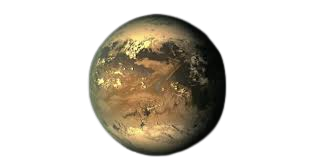

Kepler-186f, ev sahibi yıldızın çevresindeki sıcaklığın sıvı su için doğru olduğu bölge olan yaşanabilir bölge içinde bulunan ilk kayalık gezegendi.  Bu gezegen aynı zamanda Dünya'ya da çok yakın. Bu gezegenin yüzeyinde neler olup bittiğini yakın zamanda öğrenemesek de, bilim adamlarının uzak dünyalara daha yakından bakmalarını sağlayacak yeni teknolojilerin neden geliştirildiğinin güçlü bir hatırlatıcısı.
Kredi: NASA Ames/SETI Institute/JPL-Caltech